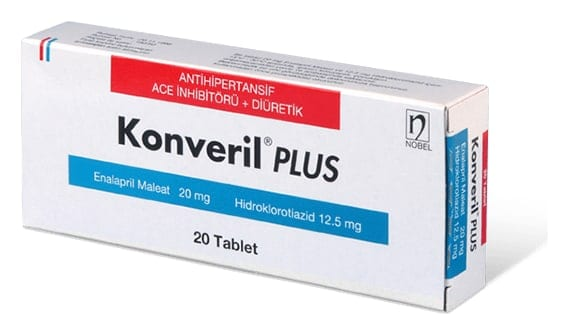

Konveril Plus 20 mg/12,5 mg Tablet, 20 Adet

Ne için kullanılır
KT · Bölüm 1 Enalapril maleat anjiyotensin dönüştürücü enzim inhibitörleri grubundan bir etkin maddedir ve kan damarlarınızı genişleterek tansiyonunuzun düşmesine yardımcı olur.
Hidroklorotiyazid, diüretikler (idrar söktürücüler) grubundan bir etkin maddedir ve idrar miktarını artırarak tansiyonunuzun düşmesine yardımcı olur.
KONVERİL PLUS enalapril ve hidroklorotiyazidin bir kombinasyonunu içerir ve tek başına enalaprilin etkili olmadığı durumlarda yüksek tansiyon tedavisinde kullanılır.
Doktorunuz aynı dozlarda enalapril ve hidroklorotiyazidi ayrı ayrı vermek yerine KONVERİL PLUS da reçete edebilir. KONVERİL PLUS yüksek tansiyonda başlangıç tedavisi için uygun değildir.
Kendinizi daha iyi hissetmiyorsanız veya daha kötü hissediyorsanız bir doktora danışınız.
KONVERİL PLUS, beyaz renkli, ortadan tek çentikli tabletler görünümünde olup 20 ve 30 tabletlik ambalajlarda kullanıma sunulmuştur. Tabletlerdeki çentiğin amacı tekrarlanabilir bölünürlüğün sağlanması değildir.
Ürün bileşiminde inek sütü kaynaklı laktoz monohidrat bulunmaktadır.